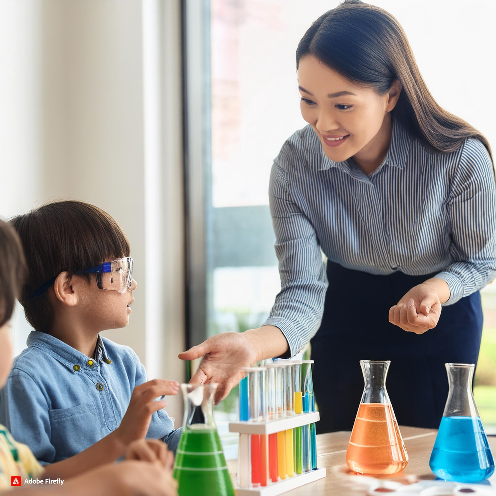

"The Vital Role of Science in Early Childhood Education"
Science in Early Childhood Curriculum
Science is crucial to early childhood education because it has led us to invent new technologies and theories we have in today's world (Australian Curriculum, Assessment and Rating Authority [ACARA], 2017). Science can also be a very effective instrument for encouraging creativity, curiosity, and discovery (ACARA, 2017).Children learn to observe, ask quesions, conduct experiments, and make sense of the world around them through scientific inquiry.Science related activities promote critical thinking and problem solving, which paves the way for creativity and lifetime learning. Children can study scientific ideas in unique and practical ways when creative approaches are incorporated into science education, which improves their comprehension and enthusiasm for the topic (AGDE, 2022).Furthermore,our actions today in the area of early childhood science education will have a greater imact on growing next generation scientists.(Steve Spangler, 2014)

Resources, Materials,and Digital Technologies
Traditional Resources and Materials:
- Magnifying Glasses: These instruments are used for close observation of natural objects, such as leaves, insects, and rocks.
- Measuring Tools: Tools such as rulers, measuring cup, and thermometers were used for the length, volume, and temperature.
- Building Blocks and LEGO: They are used for the constructing models and to explore the engineering principles and physics.
Digital Technologies:
- Interactive Science Apps: Apps like Science Journal, or Pocket code will help childrens to explore the scientific concepts and mechanism through interactive experiments.
- Virtual Reality (VR) Experiences: VR is a modern device that create an artificial environment of 3d view that can help children explore natural environments or science phenomena, like the solar system, or deep sea exploration.
- Social Media: There are wide range of professionals in the social media who provides the genral knowledge of science through interactive videos.
Learning Experiences by Age Group
0-2 Years:
- Sense Organ Exploration: Providing a variety of textures, scents, and noises for infants to explore, fostering early scientific inquiry through sensory experiences.
- Water Play: Children are very curious even of small things so conducting easy experiments to teach fundamental ideas of cause and effect by pouring, scooping, and floating things in water.
- Nature Visit: Nature walks foster curiosity and observational abilities by allowing participants to see local plants, animals, and natural items.
2-3 Years:
- Color Mixing: Color mixing is the process of experimenting with various colored paints or water to investigate color shifts and fundamental chemistry ideas.
- Planting Seeds: Cultivating plants from seed, tracking the germination process, and discovering the requirements of live organisms.
- Sinking and Floating: This easy experiment introduces early principles of density where children predict and test whether objects sink or float in water.
3-5 Years:
- Shadow Observation: Investigating how light creates shadows, experimenting with shapes, and understanding the relationship between light and shadow.
- Using Magnifying Glass: This activity promotes close examination of minor objects, such as leaves, insects, or other objects, by using magnifying glasses.
- Easy Experiments: Creating a reaction by combining vinegar and baking soda, then observing and debating the cause and effect.
6-8 Years:
- Building Simple Machines: Teach the fundamentals of engineering and physics by building simple fan using motor which is easy to understand
- Observing Weather: Weather observations include keeping track of the day to day weather, forecasting and comprehending the ideas of wind, temperature, and precipitation.
- Self Observation: Giving the assignment to children to learn the principle by observing the experiments in social platforms and ask them for the presentation in class about it's mechanism.
Pedagogical Practices and Teaching Strategies
- Encouraging Inquiry-Based Learning: Encourage and environment in the classroom where learning is centered around developing predictions, doing experiments, and asking questions in order to foster inquiry based learning. Encourage kids to use creativity to investigate their concepts and theories.
- Providing Hands-On Experiences: To make scientific concepts realistic and approachable, use physical objects and real world examples.Interactive exercises increases interest and participation.
- Including Cross-CUrricular Learning: Make connections between science and other courses, including math, language, and art, to demonstrate how scientific ideas are applicable in a variety of setting and promote holistic learning.
- Promoting Cooperation and Conversation: Encourage children to participate in group discussions and experiments where they can exchange ideas, pick up knowlege from one another, and share their own experiences.
- Using Technology Thoughtfully: Integrate digital tools to enhance exploration and understanding, ensuring that technoloy complements rather than replaces hands on learning experiences.
Through the use of these tools, activities, and instructional strategies, early childhood educators can effectively utilize science to encourage young children's creativity and ignite a curiosity and feeling of wonder (ACARA, 2017).